De un docente para docentes
Listo para la clase.
En cinco minutos.
Más de 1.600 recursos imprimibles en español, sin preparación y con solucionario: fichas de comprensión lectora y búsquedas del tesoro de lectura al estilo escape room.
Ir a mi tienda en TpTVer todos los recursos
- 1.600+ recursos
- 90+ búsquedas del tesoro
- Solucionario incluido
- Sin preparación: imprimir y usar
- Grados 1–10
Sin preparación
PDF para imprimir y usar de inmediato. Cada recurso incluye el solucionario: ideal para suplencias, estaciones o trabajo autónomo.
Pensado para el aula
Lenguaje claro y sencillo, tareas paso a paso y elementos de autocorrección para que cada estudiante trabaje con autonomía.
Todo en español
Los textos y las tareas para el alumno están en español neutro, adecuados para clases de español, programas bilingües y ELE.
Otoño
Calabazas, cosecha, hojas de otoño y fiestas de temporada: recursos de lectura para los meses de otoño.

«El secreto del manzano» – Búsqueda del tesoro de lectura

«Superpoderes de la ardilla» – Búsqueda del tesoro de lectura
«Arañas viajeras del otoño» – Búsqueda del tesoro de lectura
«Aventuras en el mercado» – Búsqueda del tesoro de lectura

«La cosecha de otoño» – Búsqueda del tesoro de lectura
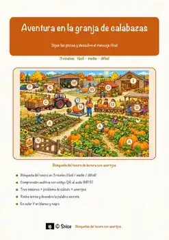
«Aventura en la granja de calabazas» – Búsqueda del tesoro de lectura

«Un festín en el bosque» – Búsqueda del tesoro de lectura
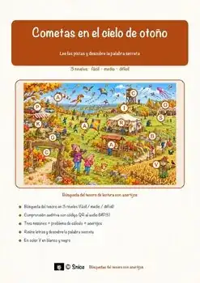
«Cometas en el cielo de otoño» – Búsqueda del tesoro de lectura
Navidad e invierno
Pan de jengibre, nieve, deportes de invierno, Navidad y Año Nuevo: recursos para la temporada fría.

«El laboratorio de pan de jengibre: Geometría entre moldes, medidas y casas» – Búsqueda del tesoro de lectura

«Luz y energía en invierno» – Búsqueda del tesoro de lectura

«Sal sobre el hielo» – Búsqueda del tesoro de lectura
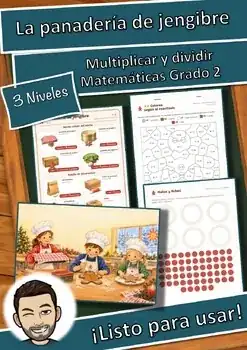
Juego de roles multiplicación y división | Panadería de Navidad Grado 2
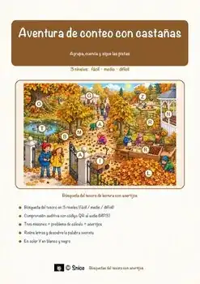
«Aventura de conteo con castañas» – Búsqueda del tesoro de lectura

«Animales en el bosque invernal» – Búsqueda del tesoro de lectura
«Aventuras en el mercado» – Búsqueda del tesoro de lectura
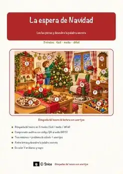
«La espera de Navidad» – Búsqueda del tesoro de lectura
Novedades
Recursos nuevos
Aquí aparecen primero mis recursos más nuevos. La lista se actualiza automáticamente.

«La calefacción central» – Búsqueda del tesoro de lectura
«El laboratorio de pan de jengibre: Geometría entre moldes, medidas y casas» – Búsqueda del tesoro de lectura
«Luz y energía en invierno» – Búsqueda del tesoro de lectura
«Sal sobre el hielo» – Búsqueda del tesoro de lectura
Juego de roles multiplicación y división | Panadería de Navidad Grado 2
«Aventura de conteo con castañas» – Búsqueda del tesoro de lectura
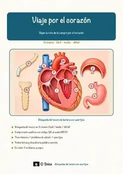
«Viaje por el corazón» – Búsqueda del tesoro de lectura
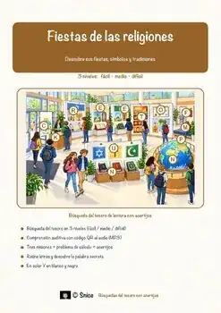
«Fiestas de las religiones» – Búsqueda del tesoro de lectura
Búsquedas del tesoro
Búsquedas del tesoro de lectura al estilo escape room: el alumnado lee una estación, sigue la pista hasta el siguiente lugar, reúne letras y descifra la palabra secreta. Los callejones sin salida permiten la autocorrección.
«La calefacción central» – Búsqueda del tesoro de lectura
«El laboratorio de pan de jengibre: Geometría entre moldes, medidas y casas» – Búsqueda del tesoro de lectura
«Luz y energía en invierno» – Búsqueda del tesoro de lectura
«Sal sobre el hielo» – Búsqueda del tesoro de lectura
«Aventura de conteo con castañas» – Búsqueda del tesoro de lectura
«Viaje por el corazón» – Búsqueda del tesoro de lectura
«Fiestas de las religiones» – Búsqueda del tesoro de lectura
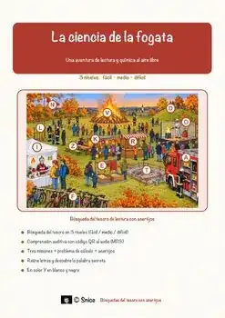
«La ciencia de la fogata» – Búsqueda del tesoro de lectura
Fichas de lectura
Texto informativo en español con huecos y banco de palabras, comprensión auditiva con código QR (audio gratuito) y sopa de letras: 5 páginas con solucionario.
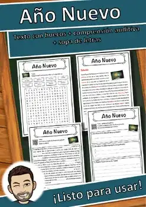
Año Nuevo – Ficha de lectura: texto con huecos, comprensión auditiva y sopa de letras
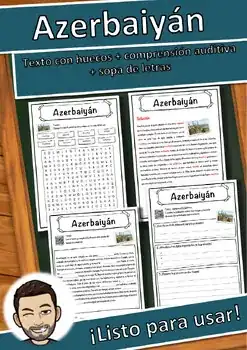
Azerbaiyán – Ficha de lectura: texto con huecos, comprensión auditiva y sopa de letras
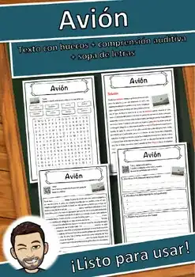
Avión – Ficha de lectura: texto con huecos, comprensión auditiva y sopa de letras

Aves – Ficha de lectura: texto con huecos, comprensión auditiva y sopa de letras
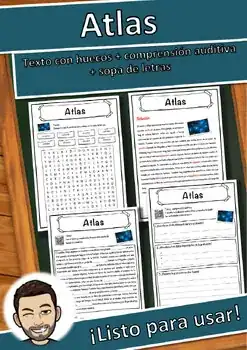
Atlas – Ficha de lectura: texto con huecos, comprensión auditiva y sopa de letras
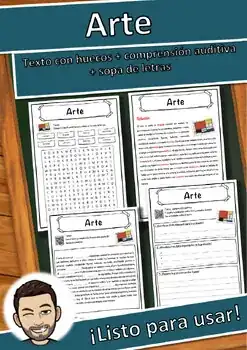
Arte – Ficha de lectura: texto con huecos, comprensión auditiva y sopa de letras
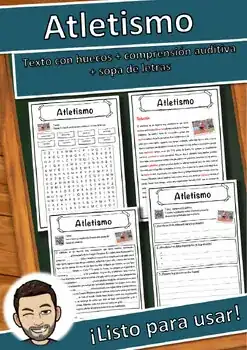
Atletismo – Ficha de lectura: texto con huecos, comprensión auditiva y sopa de letras
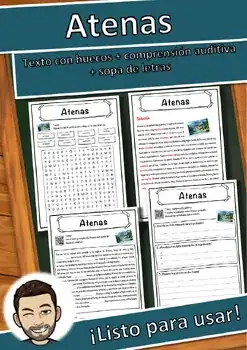
Atenas – Ficha de lectura: texto con huecos, comprensión auditiva y sopa de letras
Por materia
Todos los recursos de un área en una sola página, filtrables por grado.
Por grado
Elige un grado para ver los recursos adecuados.
Otros idiomas
Esta página solo muestra recursos en español. Aquí encontrarás mis materiales en inglés, francés, italiano y alemán.
Deutsch
Más de 6.500 materiales en alemán con solucionario, disponibles en eduki.
Ir a la página en Deutsch →English
Lecturas, búsquedas del tesoro y estaciones de matemáticas en inglés, disponibles en TpT. · 3.064 recursos
Ir a la página en English →Français
Fichas en francés con texto con huecos, comprensión auditiva y sopa de letras, disponibles en eduki. · 2.400 recursos
Ir a la página en Français →Italiano
Fichas en italiano con texto con huecos, comprensión auditiva y sopa de letras, disponibles en eduki. · 1.260 recursos
Ir a la página en Italiano →Preguntas frecuentes
¿Dónde puedo comprar los recursos?
Todos los recursos de esta página se venden en mi tienda “Snice” de Teachers Pay Teachers (TpT). Cada página de recurso tiene un botón que lleva directamente al producto.
¿Para qué grados son?
El grado exacto aparece en cada página de recurso y en la ficha de TpT. Las fichas de lectura en español están pensadas sobre todo para los grados 7–12.
¿Incluyen solucionario?
Sí. Las fichas de lectura y las búsquedas del tesoro incluyen solucionario, así que también sirven para suplencias o trabajo autónomo.
¿En qué formato están?
Archivos PDF para imprimir, sin preparación: imprimir y usar.
¿Hay recursos en otros idiomas?
Sí: en la sección “Otros idiomas” encontrarás mis recursos en inglés, francés, italiano y alemán.
De un docente para docentes
Soy docente en Alemania y creo los recursos primero para mis propios estudiantes. Cada recurso se revisa antes de publicarse, para que prepares menos y enseñes más.